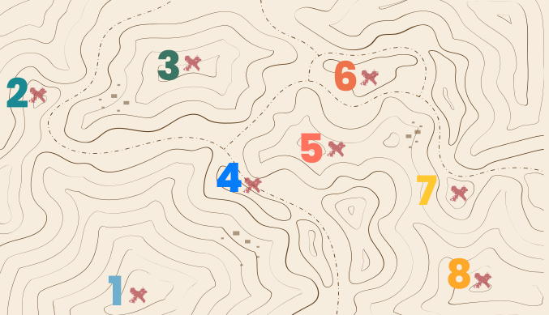

Clique nos números e conheça os passos para desenvolver o mapa falante das redes.
PASSO 1
Responder às questões norteadoras.
Qual é a área de abrangência do território?
Qual é o perfil da população que habita este território?
Qual é o perfil dos grupos vulneráveis que convivem neste território?
x
PASSO 2
Listar as organizações.
Consiste em fazer uma lista de todas as organizações com as quais a sua equipe mantém algum tipo de relacionamento e que pode interferir no desenvolvimento do trabalho.
x
PASSO 3
Classificar as organizações segundo sua natureza.
Para ajudar a enxergar no mapa a dinâmica do ambiente onde a sua equipe de Atenção Primária atua, todas as organizações listadas devem ser classificadas em grupos, tipos ou famílias, segundo critério a ser definido pela sua equipe e que atendam às suas necessidades. Um exemplo de classificação de organizações é:
Serviços da assistência social disponíveis no território.
Serviços de saúde disponíveis do território.
Organizações religiosas presentes no território.
Organizações parceiras na implementação do trabalho.
Organizações que atuam com a mesma causa.
x
PASSO 4
Identificar os dispositivos presentes que podem auxiliar na atenção e no cuidado às pessoas em situação de vulnerabilidade e classificá-los segundo seu grau de importância.
As organizações podem ser classificadas entre muito, médio e pouco importantes. Em um segundo momento, essa distinção pode ser marcada pelo tamanho do papel no qual a organização terá seu nome escrito. Dessa maneira, organizações muito importantes têm os papéis de maior tamanho; as médias, papéis de porte mediano; e as pouco importantes, papéis de menor tamanho.
x
PASSO 5
Identificar quais os dispositivos previstos no SUS ou SUAS estão ausentes, ou seja, o que falta no território.
x
PASSO 6
Descrever os seguintes questionamentos para os principais serviços existentes no território:
Como os profissionais percebem cada grupo vulnerável?
Como os serviços recebem e acolhem os grupos vulneráveis?
Caso haja dificuldade nesse acolhimento, como a equipe pode interferir?
x
PASSO 7
Identificar as potencialidades do território.
x
PASSO 8
Conhecer a presença do poder público no território.
x